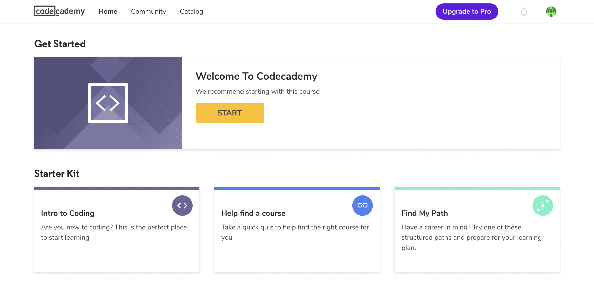
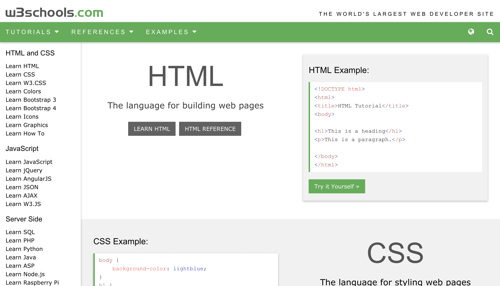

LEARN CODING
Online developments and technological advancements have made it necessary for us to learn new skills. In this age of globalization and information-reliance, one of the most crucial skills is coding. In many cases, it can directly affect career development.
Even if you’re not in the web development field, learning how to code can help you improve your business performance as well as enhance skills such as logical thinking and problem-solving.
If you’re a designer, learning how to code is even more important. Having basic programming knowledge allows you to collaborate with developers more efficiently.

GITHUB

GitHub is the world's leading software development platform and also the largest open-source community. It is one of the most important tools for developers and engineers. Numerous free books covering over 80 different programming languages on the Git repository hosting service makes GitHub an excellent place to learn how to code.
In addition, if you are a developer, you can share your code with your peers.At present, Github has more than 3.5 million users. For beginners, it would be the best website to learn coding.
Advantages:
- Numerous projects
- Free programming books
- A large amount of open-source code
- Social platforms such as LinkedIn can be connected
LINK: GITHUB
CODECADEMY
Codecademy is one of the most popular free websites to learn to code. At the most recent count, more than 45 million users have learned how to code through this excellent platform.
Codeacademy is an amazing website that offers specialized online coding courses. At Codecademy, you have the opportunity to learn a variety of programming languages such as JavaScript, CSS, Python, and more.
It is worth mentioning that Codecademy provides learners with a new way of learning（It is interactive, fun and you can learn coding with your friends as well), which allows them to learn to code in a more pleasant and interesting way.
Advantages:
- Custom learning plan
- Multiple languages
UDEMY

Udemy is an online learning platform which currently offers 80,000 online coding courses including web development, UX design, UI development, and iOS development. Learners are able to take courses largely as a means of improving job-related skills. Some of the courses are free, while others charge a fee.
At Udemy, you can find a suitable instructor, and you’ll find some courses that are tailored specifically to your own needs.
Advantages:
- Community communication
- A large number of free programming courses
LINK: UDEMY
W3SCHOOLS
W3Schools is an educational website for learning coding online. It provides comprehensive web development tutorials and references.
W3school offers a wide range of courses like HTML, CSS, PHP, JavaScript, jQuery, XML, SQL, Asp, and JSP.
Advantages:
- All courses are free
- Online support via forum
- Provides useful tools (such as color pickers)
- Provides tutorials at different stages (from beginner to advanced)
LINK: W3